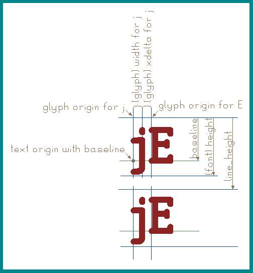

Librnd is using a custom vector font originally derived from gEDA/PCB's font concept. The rendering engine is custom and so is the terminology. Below is a figure of a 2 line text object placed by baseline origin, showing the names of different fields and concepts.

Each glyph is in a "cell" with its origin (0;0 coordinates) on the top left. Cells have a font-global height but a per glyph width. Each glyph also has an xdelta which is extra space left after the glyph on the right side.
Optional baseline is specified from the top. Line height is the vertical advance between two lines of text.
Note: strokes have their thickness (width); their coordinates are specified centerline. That's why the vertical blue lines are crossing into the rendered font: they hit the centerline of the glyph line atoms.
The font is drawn in it's 1:1 scale (which is the 100% scale). All coordinate values (sizes, widths, heights, thicknesses) are specified for this neutral state. When the font is placed and scaled, everything scales linearly.
Classic stroke fonts are drawn using lines and arcs. Each line and each arc has its own thickness, which is generally uniform in a font. Extra decoraton, like serif, may use thinner lines/arcs. Bold version of a font may use thicker lines/arcs.
Note: the host application may decide to override the original thickness with a fixed value in which case all lines and arcs are rendered with the same new thickness.
If the font uses polygons to specify the outline of glyphs, there is no thickness: polygons have no contour thickness and the host application can not override a value or change polygon dimensions.
Normally the advance is calculated as width+xdelta. In the above example from j's origin to E's origin it'ss j's width plus j's xdelta.
If j-E is present in the kerning table with a non-zero value, that kerning value is also added to the above sum. A positive value will push E to the right, a negative value to the left.
When enabled, horizontal tabs are renderedso they end at predefined tab positions. The spacing between tabb positions is specified by the font-global tab_width field.